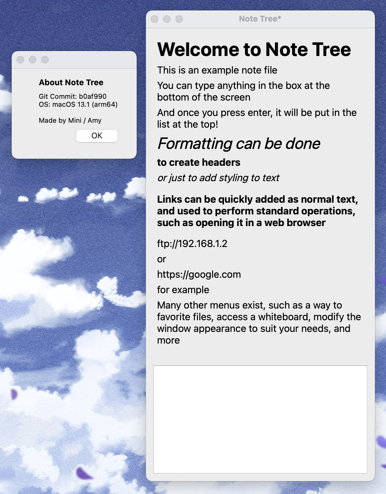

Note Taking application written in Qt5.
The application uses a unique way of writing notes, preferring to format it almost as if it was a list. This itemized style of taking notes is rather limiting, but makes it easier to conform to a speciifc style, which is what I designed it for.
